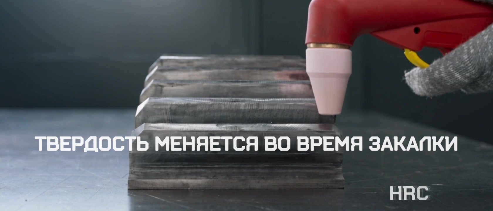
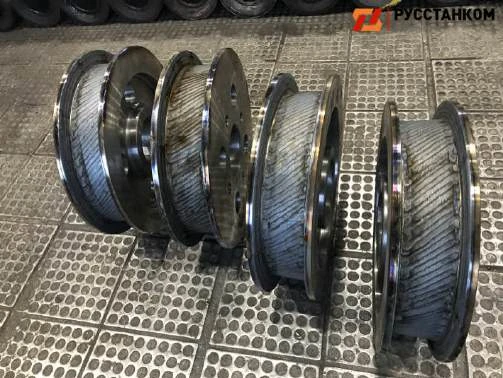
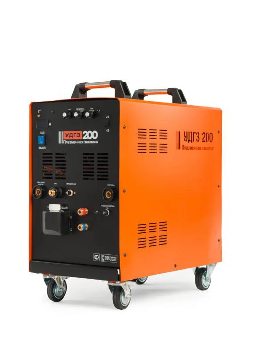
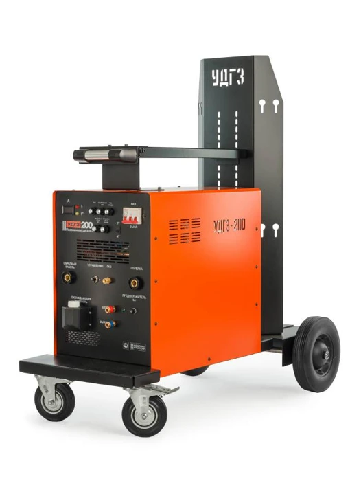
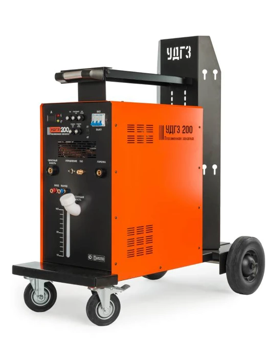

Нужный участок.
Посадочные места, зубья, направляющие. Обрабатывайте зоны, которые работают на износ.
Мобильные установки плазменной закалки УДГЗ
Упрочняйте сталь и чугун.
Прямо на вашем производстве.
до 65 HRC
Твёрдость поверхностидо 2 мм
Глубина закалённого слоядо 110 см²/мин
ПроизводительностьПредельные значения. Результат зависит от марки материала и режима обработки.
Технология в действии
Горелка локально нагревает рабочую зону детали. Закалка проходит вручную, без помещения всей детали в печь.

Посадочные места, зубья, направляющие. Обрабатывайте зоны, которые работают на износ.
Привезите установку к детали и выполняйте закалку на месте. Работайте с узлами, которые сложно поместить в печь.
В том числе низкоуглеродистые стали 20Л и 35Л. Режим выбирается под конкретный материал.
От отдельного зуба до большого узла
Упрочняйте рабочие поверхности и увеличивайте межремонтный ресурс деталей.

Пример применения из материалов производителяЛинейка УДГЗ

Питание от сети 220 В
Самая лёгкая в линейке.
Стоимость по запросу
Получить КП
Питание от сети 380 В
Расширенная настройка режимов.
Стоимость по запросу
Получить КП
Питание от сети 380 В
Максимальный ток. Рукав 6 метров.
Стоимость по запросу
Получить КП| Параметр | 200 Компакт | 200 Смарт | 250 Про |
|---|---|---|---|
| Максимальный ток | 180 А | 200 А | 250 А |
| Напряжение сети | 220 В | 380 В | 380 В |
| Мощность | 6,3 кВт | 7 кВт | 9,5 кВт |
| ПВ | 65% | 60% | 75% |
| Вес | 53 кг | 72 кг | 74 кг |
| Длина рукава | 4 м | 4 м | 6 м |
| Габариты, мм | 560 × 330 × 660 | 1012 × 580 × 1100 | 1012 × 580 × 1100 |
| Рабочий газ | Аргон нормальной степени очистки | ||
| Производительность | До 110 см²/мин | ||
| Твёрдость / глубина слоя | До 65 HRC / до 2 мм, в зависимости от материала и режима | ||
| Настройка | Ток, продувка до, ток спада, 2Т/4Т | Ток, стартовый ток, ток спада, продувка до и после, 2Т/4Т | |
Технология с промышленным опытом
В материалах собраны отзывы и акты применения технологии на предприятиях «Мечел», ВСМПО-АВИСМА и ЕВРАЗ.
Посмотреть материалы производителяГарантия на установку.
Запатентованная технология.
Эксклюзивный поставщик в РФ и СНГ по соглашению с патентообладателем.
Установка на тележке, горелка с электродом и керамическим соплом 12 мм, электрод 9 мм, сопло 9 мм, обратный кабель с зажимом и руководство с рекомендациями по закалке.
Электросеть 220 или 380 В в зависимости от модели и аргон нормальной степени очистки. Дополнительно предлагаются расходные материалы, газовый редуктор, охлаждающая жидкость, педаль и твердомер. Состав поставки можно уточнить в отделе продаж.
Для подбора нужны марка материала, размеры рабочей зоны и требуемая твёрдость. Пришлите описание или чертёж: возможность закалки и режим обработки нужно оценить для вашей задачи.
Твёрдость поверхности контролируют ультразвуковым твердомером УЗИТ-3.
Начнём с вашей задачи
Расскажите, что нужно упрочнить.
Подберём установку и подготовим КП.
Отправьте письмо из открывшейся почтовой программы.
Если она не открылась, скопируйте запрос и отправьте его на info@rusplasma.com.